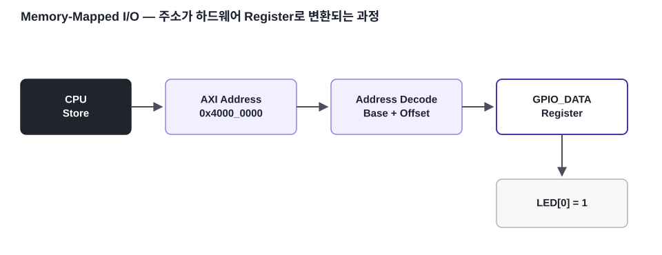
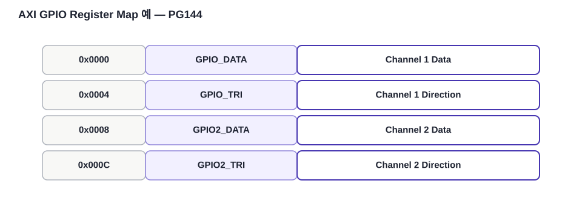

핵심 질문
LED와 Timer가 왜 CPU 주소를 갖는가?
FPGA / SoC 개념 · 06
CPU 주소가 Peripheral Register를 선택하고, Register 값이 실제 FPGA 신호로 연결되는 과정을 AXI GPIO와 AXI Timer의 실제 주소표로 설명합니다.
LED와 Timer가 왜 CPU 주소를 갖는가?
Base Address + Register Offset으로 실제 주소를 만듭니다.
PG144·PG079의 Register Map을 기준으로 봅니다.

Memory-Mapped I/O는 Peripheral Register를 CPU의 주소 공간 일부에 배치하는 방식입니다. CPU 입장에서는 Memory Read/Write처럼 보이지만, 실제로는 특정 Hardware Register를 읽고 쓰게 됩니다.
예를 들어 AXI GPIO의 Base Address가 0x4000_0000이고 GPIO_DATA Offset이 0x0000이면 실제 주소는 0x4000_0000입니다. GPIO_TRI Offset이 0x0004이면 실제 주소는 0x4000_0004가 됩니다.

PG144는 Channel 1 GPIO Data Register를 Offset 0x0000, 3-state Control Register를 0x0004로 정의합니다. Channel 2는 각각 0x0008, 0x000C입니다.
PG079의 Register Overview에서 Timer 0은 TCSR0 0x00, TLR0 0x04, TCR0 0x08에 배치됩니다. Timer 1은 0x10, 0x14, 0x18입니다.
Register Map을 이해하면 기존 UART Register Map RTL 실습과 MicroBlaze AXI Peripheral의 사고방식이 하나로 연결됩니다.
본문의 기술 내용과 교육용 재작성 그림은 아래 공식 문서를 기준으로 검증했습니다. 원문 전체를 복제하지 않고 핵심 구조를 학습용으로 재구성했습니다.